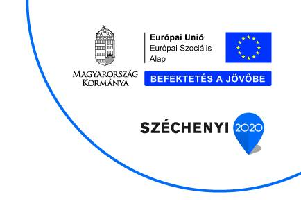

Széchenyi 2020
GINOP‑5.2.4‑16 Gyakornoki program pályakezdők támogatására
A program megvalósulása az LK-SYSTEMS Bt.-nél
- A kedvezményezett neve
- LK-SYSTEMS Bt.
- A projekt címe
- Gyakornoki program az LK-SYSTEMS Betéti társaságnál
- Szerződés száma
- GINOP-5.2.4-16-2017-02008
- Támogatás összege
- 3 589 975 Ft
- Támogatás mértéke
- 100%
- Pályázat záró dátuma
- 2018. november 30.
Az LK-SYSTEMS Bt. 2013-ban jött létre azzal a céllal, hogy Mosonmagyaróváron és környékén működő kkv-k számára nyújtson olyan informatikai szolgáltatásokat, melyek növelhetik hatékonyságukat és versenyképességüket. A társaság a kezdetektől IT rendszerek üzemeltetésével, hálózatépítéssel, hibaelhárítással, informatikai eszközök karbantartásával, kereskedelmével és egyéb felhő (Cloud) szolgáltatások nyújtásával foglalkozik. Folyamatosan bővülő ügyfélkörükben megtalálható az 1-2 fős mikrovállalkozásoktól a több száz főt foglalkoztató kis- és középvállalkozás is.
A program elsődleges célja a közvetlen munkahelyteremtés elősegítésén túl az iskolai rendszerű képzésben megszerzett szakképesítés hasznosulásának elősegítése, a fiatalok korai munkahelyi tapasztalathoz segítése, ezzel a későbbi foglalkoztathatóságuk és cégünk versenyképességének növelése. Ennek keretében az LK-SYSTEMS Bt. 13 és fél hónapon keresztül foglalkoztat egy fő rendszergazda gyakornokot, akinek fejlődését a munkahelyi mentor, valamint újonnan beszerzett IT berendezések, eszközök segítik.
A programmal kapcsolatos további információ: balazs@lk-systems.hu
